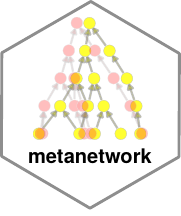
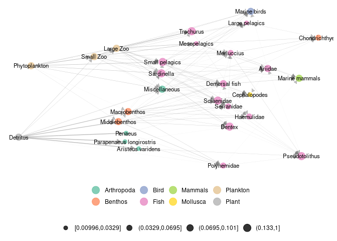

[R build status](https://github.com/MarcOhlmann/metanetwork/actions/workflows/R-CMD-check/badge.svg
Description
A collection of tools in R to represent and analyse trophic networks in space across aggregation levels. The package contains a layout algorithm specifically designed for trophic networks, using trophic levels and dimension reduction on a diffusion kernel.
Package installation
install_github("MarcOhlmann/metanetwork")
Loading the package
Loading ‘igraph’ is also strongly recommended since ‘metanetwork’ objects are built from ‘igraph’ objects
Introduction and basics
In ecological networks literature, metanetwork refers to a set of networks in space. In R package ‘metanetwork’, we stick to a widespread (however restrictive) case:
- a potential interaction network (the metaweb, can be built using expert knowledge)
- local abundance tables, local networks are then induced subgraph of the metaweb by local abundances
Additional information might be considered (and used in ‘metanetwork’) as:
- a trophic table indicating a hierarchy of nodes of the metaweb, in order to study the metanetwork at different aggregation levels
See vignettes for application of ‘metanetwork’ on several datasets.
data("meta_angola")
#Angola dataset
ggmetanet(meta_angola,beta = 0.05,legend = "Phylum")

Authors
This package is currently developed by Marc Ohlmann from Laboratoire d’Ecologie Alpine, Grenoble and Jimmy Garnier and Laurent Vuillon from Laboratoire de Mathématiques, Chambéry. It is supported by the ANR Globnets and ANR Econet.